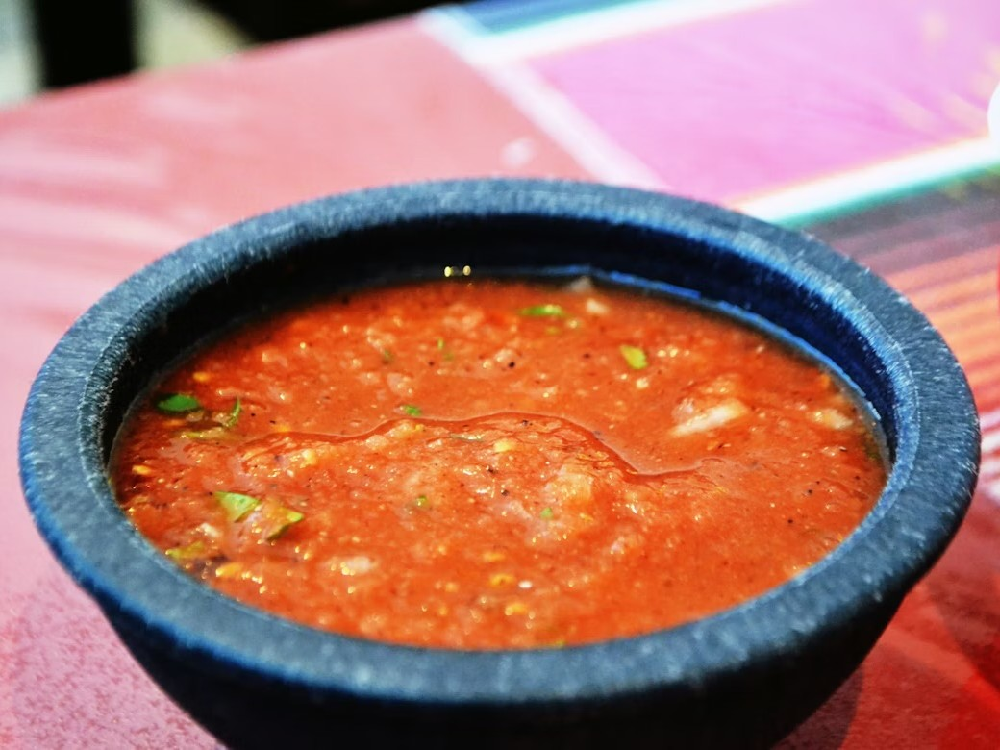

Yes salsa!
... or chile, chile molido, sauce, condiment, pico de gallo, spread, dip, aioli, dressing, jam, gravy; however you choose to call it and however you like to enjoy it. Although, it might not the kind that you dance, but if it's got the flavor, it might be good enough to get you moving! No one should be afraid to spice up their life and a real easy way to do it, is by adding some spice to your plate. Whether you like it spicy, mild or sweet, or whether you like green, red, orange, or any other color. Feel free to try new flavors and add twist to your plate and get your taste buds grooving. Below are a few links to some different recipes by different creators with their own different style by incorporating more ingedients into their unique salsa throwdown.
